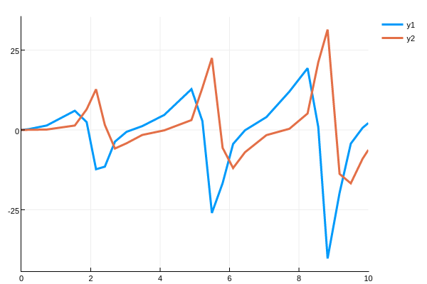

Local Sensitivity Analysis (Automatic Differentiation)
Sensitivity analysis, or automatic differentiation of the solver, is provided by the DiffEq suite. The model sensitivities are the derivatives of the solution $u(t)$ with respect to the parameters. Specifically, the local sensitivity of the solution to a parameter is defined by how much the solution would change by changes in the parameter, i.e. the sensitivity of the ith independent variable to the jth parameter is $\frac{\partial u_i}{\partial p_{j}}$.
Sensitivity analysis serves two major purposes. On one hand, the sensitivities are diagnostics of the model which are useful for understand how it will change in accordance to changes in the parameters. But another use is simply because in many cases these derivatives are useful. Sensitivity analysis provides a cheap way to calculate the gradient of the solution which can be used in parameter estimation and other optimization tasks.
There are three types of sensitivity analysis. Local forward sensitivity analysis directly gives the gradient of the solution with respect to each parameter along the time series. The computational cost scales like N*M, where N is the number of states and M is the number of parameters. While this gives all of the information, it can be expensive for models with large numbers of parameters. Local adjoint sensitivity analysis solves directly for the gradient of some functional of the solution, such as a cost function or energy functional, in a manner that is cheaper when the number of parameters is large. Global Sensitivity Analysis methods are meant to be used for exploring the sensitivity over a larger domain without calculating derivatives and are covered on a different page.
Installation
This functionality does not come standard with DifferentialEquations.jl. To use this functionality, you must install DiffEqSensitivity.jl:
]add DiffEqSensitivity
using DiffEqSensitivityHigh Level Interface: sensealg
The highest level interface is provided by the function solve:
solve(prob,args...;sensealg=InterpolatingAdjoint(),
checkpoints=sol.t,kwargs...)solve is fully compatible with automatic differentiation libraries like:
and will automatically replace any calculations of the solution's derivative with a fast method. The keyword argument sensealg controls the dispatch to the AbstractSensitivityAlgorithm used for the sensitivity calculation. Note that solve in an AD context does not allow higher order interpolations unless sensealg=DiffEqBase.SensitivityADPassThrough() is used, i.e. going back to the AD mechanism.
ForwardDiff.jl only does forward differentiation pass through.
solve Differentiation Examples
using DiffEqSensitivity, OrdinaryDiffEq, ForwardDiff, Zygote
function fiip(du,u,p,t)
du[1] = dx = p[1]*u[1] - p[2]*u[1]*u[2]
du[2] = dy = -p[3]*u[2] + p[4]*u[1]*u[2]
end
p = [1.5,1.0,3.0,1.0]; u0 = [1.0;1.0]
prob = ODEProblem(fiip,u0,(0.0,10.0),p)
sol = solve(prob,Tsit5())But if we want to perturb u0 and p in a gradient calculation then we can do forward-mode:
function sum_of_solution(x)
_prob = remake(prob,u0=x[1:2],p=x[3:end])
sum(solve(_prob,Tsit5(),saveat=0.1))
end
dx = ForwardDiff.gradient(sum_of_solution,[u0;p])or reverse-mode:
function sum_of_solution(u0,p)
_prob = remake(prob,u0=u0,p=p)
sum(solve(_prob,Tsit5(),saveat=0.1,sensealg=QuadratureAdjoint()))
end
du01,dp1 = Zygote.gradient(sum_of_solution,u0,p)Or we can use the u0 and p keyword argument short hands to tell it to replace u0 and p by the inputs:
du01,dp1 = Zygote.gradient((u0,p)->sum(solve(prob,Tsit5(),u0=u0,p=p,saveat=0.1,sensealg=QuadratureAdjoint())),u0,p)Here this computes the derivative of the output with respect to the initial condition and the the derivative with respect to the parameters respectively using the QuadratureAdjoint().
When Zygote.jl is used in a larger context, these gradients are implicitly calculated and utilized. For example, the Flux.jl deep learning package uses Zygote.jl in its training loop, so if we use solve in a likelihood of a Flux training loop then the derivative choice we make will be used in the optimization:
using Flux, Plots
p = [2.2, 1.0, 2.0, 0.4] # Initial Parameter Vector
function predict_adjoint() # Our 1-layer neural network
Array(solve(prob,Tsit5(),p=p,saveat=0.0:0.1:10.0,sensealg=BacksolveAdjoint())) # Concretize to a matrix
end
loss_adjoint() = sum(abs2,x-1 for x in predict_adjoint())
data = Iterators.repeated((), 100)
opt = ADAM(0.1)
cb = function () #callback function to observe training
display(loss_adjoint())
# using `remake` to re-create our `prob` with current parameters `p`
display(plot(solve(remake(prob,p=p),Tsit5(),saveat=0.0:0.1:10.0),ylim=(0,6)))
end
# Display the ODE with the initial parameter values.
cb()
Flux.train!(loss_adjoint, Flux.params(p), data, opt, cb = cb)This optimizes the parameters from a starting point p where the gradients are calculated using the BacksolveAdjoint method.
Using this technique, we can define and mix neural networks into the differential equation:
using DiffEqFlux, Flux, OrdinaryDiffEq, DiffEqSensitivity
u0 = Float32[0.0; 1.1]
tspan = (0.0f0,1.0f0)
ann = Chain(Dense(2,10,tanh), Dense(10,1))
p1,re = Flux.destructure(ann)
p2 = Float32[-0.5,-0.5]
p3 = [p1;p2]
ps = Flux.params(p3,u0)
function dudt_(du,u,p,t)
x, y = u
du[1] = re(p[1:41])(u)[1]
du[2] = p[end-1]*y + p[end]*x
end
prob = ODEProblem(dudt_,u0,tspan,p3)
function predict_adjoint()
Array(solve(prob,Tsit5(),u0=u0,p=p3,saveat=0.0:0.1:1.0,abstol=1e-8,
reltol=1e-6,sensealg=InterpolatingAdjoint(checkpointing=true)))
# ^ wrapped this in Array as done in the previous example
end
loss_adjoint() = sum(abs2,x-1 for x in predict_adjoint())
data = Iterators.repeated((), 100)
opt = ADAM(0.1)
cb = function ()
display(loss_adjoint())
#display(plot(solve(remake(prob,p=p3,u0=u0),Tsit5(),saveat=0.1),ylim=(0,6)))
end
# Display the ODE with the current parameter values.
cb()
Flux.train!(loss_adjoint, ps, data, opt, cb = cb)For more details and helper function for using DifferentialEquations.jl with neural networks, see the DiffEqFlux.jl repository.
Sensitivity Algorithms
The following algorithm choices exist for sensealg. See the sensitivity mathematics page for more details on the definition of the methods.
ForwardSensitivity(;ADKwargs...): An implementation of continuous forward sensitivity analysis for propagating derivatives by solving the extended ODE. Only supports ODEs.ForwardDiffSensitivity(;chunk_size=0,convert_tspan=true): An implementation of discrete forward sensitivity analysis through ForwardDiff.jl. This algorithm can differentiate code with callbacks whenconvert_tspan=true, but will be faster whenconvert_tspan=false.BacksolveAdjoint(;checkpointing=true,ADKwargs...): An implementation of adjoint sensitivity analysis using a backwards solution of the ODE. By default this algorithm will use the values from the forward pass to perturb the backwards solution to the correct spot, allowing reduced memory with stabilization. Only supports ODEs and SDEs.InterpolatingAdjoint(;checkpointing=false;ADKwargs...): The default. An implementation of adjoint sensitivity analysis which uses the interpolation of the forward solution for the reverse solve vector-Jacobian products. By default it requires a dense solution of the forward pass and will internally ignore saving arguments during the gradient calculation. When checkpointing is enabled it will only require the memory to interpolate between checkpoints. Only supports ODEs and SDEs.QuadratureAdjoint(;abstol=1e-6,reltol=1e-3,compile=false,ADKwargs...): An implementation of adjoint sensitivity analysis which develops a full continuous solution of the reverse solve in order to perform a post-ODE quadrature. This method requires the the dense solution and will ignore saving arguments during the gradient calculation. The tolerances in the constructor control the inner quadrature. The inner quadrature uses a ReverseDiff vjp if autojacvec, andcompile=falseby default but can compile the tape under the same circumstances asReverseDiffVJP. Only supports ODEs.ReverseDiffAdjoint(): An implementation of discrete adjoint sensitivity analysis using the ReverseDiff.jl tracing-based AD. Supports in-place functions through an Array of Structs formulation, and supports out of place through struct of arrays.TrackerAdjoint(): An implementation of discrete adjoint sensitivity analysis using the Tracker.jl tracing-based AD. Supports in-place functions through an Array of Structs formulation, and supports out of place through struct of arrays.ZygoteAdjoint(): An implementation of discrete adjoint sensitivity analysis using the Zygote.jl source-to-source AD directly on the differential equation solver. Currently fails.SensitivityADPassThrough(): Ignores all adjoint definitions and proceeds to do standard AD through thesolvefunctions.
The ReverseDiffAdjoint(), TrackerAdjoint(), ZygoteAdjoint(), and SensitivityADPassThrough() algorithms all offer differentiate-through-the-solver adjoints, each based on their respective automatic differentiation packages. If you're not sure which to use, ReverseDiffAdjoint() is generally a stable and performant best if using the CPU, while TrackerAdjoint() is required if you need GPUs. Note that SensitivityADPassThrough() is more or less an internal implementation detail. For example, ReverseDiffAdjoint() is implemented by invoking ReverseDiff's AD functionality on solve(...; sensealg=SensitivityADPassThrough()).
Internal Automatic Differentiation Options (ADKwargs)
Many sensitivity algorithms share the same options for controlling internal use of automatic differentiation. The following arguments constitute the ADKwargs:
autodiff: Use automatic differentiation in the internal sensitivity algorithm computations. Default istrue.chunk_size: Chunk size for forward mode differentiation if full Jacobians are built (autojacvec=falseandautodiff=true). Default is0for automatic choice of chunk size.autojacvec: Calculate the Jacobian-vector (forward sensitivity) or vector-Jacobian (adjoint sensitivity analysis) product via automatic differentiation with special seeding. For adjoint methods this option requiresautodiff=true. Ifautojacvec=false, then a full Jacobian has to be computed, and this will default to using af.jacfunction provided by the user from the problem of the forward pass. Otherwise, ifautodiff=trueandautojacvec=falsethen it will use forward-mode AD for the Jacobian, otherwise it will fall back to using a numerical approximation to the Jacobian. Additionally, if the method is an adjoint method, there are three choices which can be made explicitly:TrackerVJP: Uses Tracker.jl for the vjp. Default of in-place definitions.ZygoteVJP: Uses Zygote.jl for the vjp. Default for out-of-place definitions.ReverseDiffVJP(compile=false): Uses ReverseDiff.jl for the vjp.compileis a boolean for whether to precompile the tape, which should only be done if there are no branches (iforwhilestatements) in theffunction. When applicable,ReverseDiffVJP(true)is the fastest method, and thenReverseDiffVJP(false)is the second fastest, but this method is not compatible with third party libraries like Flux.jl, FFTW.jl, etc. (only linear algebra and basic mathematics is supported) so it should be swapped in only as an optimization.
Note that the Jacobian-vector products and vector-Jacobian products can be directly specified by the user using the performance overloads.
Choosing a Sensitivity Algorithm
For an analysis of which methods will be most efficient for computing the solution derivatives for a given problem, consult our analysis in this arxiv paper. A general rule of thumb is:
ForwardDiffSensitivityis the fastest for differential equations with small numbers of parameters (<100) and can be used on any differential equation solver that is native Julia.- Adjoint senstivity analysis is the fastest when the number of parameters is sufficiently large. There are three configurations of note. Using
QuadratureAdjointis the fastest for small systems,BacksolveAdjointuses the least memory but on very stiff problems it may be unstable and require a lot of checkpoints, whileInterpolatingAdjointis in the middle, allowing checkpointing to control total memory use. - The methods which use automatic differentiation (
ReverseDiffAdjoint,TrackerAdjoint,ForwardDiffSensitivity, andZygoteAdjoint) support the full range of DifferentialEquations.jl features (SDEs, DDEs, events, etc.), but only work on native Julia solvers. The methods which utilize altered differential equation systems only work on ODEs (without events), but work on any ODE solver. - For non-ODEs with large numbers of parameters,
TrackerAdjointin out-of-place form may be the best performer. TrackerAdjointis able to use aTrackedArrayform with out-of-place functionsdu = f(u,p,t)but requires anArray{TrackedReal}form forf(du,u,p,t)mutatingdu. The latter has much more overhead, and should be avoided if possible. Thus if solving non-ODEs with lots of parameters, usingTrackerAdjointwith an out-of-place definition may be the current best option.
Lower Level Sensitivity Analysis Interfaces
While the high level interface is sufficient for interfacing with automatic differentiation, for example allowing compatibility with neural network libraries, in some cases one may want more control over the way the sensitivities are calculated in order to squeeze out every ounce of optimization. If you're that user, then this section of the docs is for you.
Local Forward Sensitivity Analysis via ODEForwardSensitivityProblem
Local forward sensitivity analysis gives a solution along with a timeseries of the sensitivities. Thus if one wishes to have a derivative at every possible time point, directly utilizing the ODELocalSensitivityProblem can be more efficient.
ODEForwardSensitivityProblem Syntax
ODELocalSensitivityProblem is similar to an ODEProblem, but takes an AbstractSensitivityAlgorithm that describes how to append the forward sensitivity equation calculation to the time evolution to simultaneously compute the derivative of the solution with respect to parameters.
ODEForwardSensitivityProblem(f::SciMLBase.AbstractODEFunction,u0,
tspan,p=nothing,
sensealg::AbstractForwardSensitivityAlgorithm = ForwardSensitivity();
kwargs...)Once constructed, this problem can be used in solve. The solution can be deconstructed into the ODE solution and sensitivities parts using the extract_local_sensitivities function, with the following dispatches:
extract_local_sensitivities(sol, asmatrix::Val=Val(false)) # Decompose the entire time series
extract_local_sensitivities(sol, i::Integer, asmatrix::Val=Val(false)) # Decompose sol[i]
extract_local_sensitivities(sol, t::Union{Number,AbstractVector}, asmatrix::Val=Val(false)) # Decompose sol(t)For information on the mathematics behind these calculations, consult the sensitivity math page
Example using an ODELocalSensitivityProblem
To define a sensitivity problem, simply use the ODELocalSensitivityProblem type instead of an ODE type. For example, we generate an ODE with the sensitivity equations attached for the Lotka-Volterra equations by:
function f(du,u,p,t)
du[1] = dx = p[1]*u[1] - p[2]*u[1]*u[2]
du[2] = dy = -p[3]*u[2] + u[1]*u[2]
end
p = [1.5,1.0,3.0]
prob = ODELocalSensitivityProblem(f,[1.0;1.0],(0.0,10.0),p)This generates a problem which the ODE solvers can solve:
sol = solve(prob,DP8())Note that the solution is the standard ODE system and the sensitivity system combined. We can use the following helper functions to extract the sensitivity information:
x,dp = extract_local_sensitivities(sol)
x,dp = extract_local_sensitivities(sol,i)
x,dp = extract_local_sensitivities(sol,t)In each case, x is the ODE values and dp is the matrix of sensitivities The first gives the full timeseries of values and dp[i] contains the time series of the sensitivities of all components of the ODE with respect to ith parameter. The second returns the ith time step, while the third interpolates to calculate the sensitivities at time t. For example, if we do:
x,dp = extract_local_sensitivities(sol)
da = dp[1]then da is the timeseries for $\frac{\partial u(t)}{\partial p}$. We can plot this
plot(sol.t,da',lw=3)transposing so that the rows (the timeseries) is plotted.

Here we see that there is a periodicity to the sensitivity which matches the periodicity of the Lotka-Volterra solutions. However, as time goes on the sensitivity increases. This matches the analysis of Wilkins in Sensitivity Analysis for Oscillating Dynamical Systems.
We can also quickly see that these values are equivalent to those given by automatic differentiation and numerical differentiation through the ODE solver:
using ForwardDiff, Calculus
function test_f(p)
prob = ODEProblem(f,eltype(p).([1.0,1.0]),eltype(p).((0.0,10.0)),p)
solve(prob,Vern9(),abstol=1e-14,reltol=1e-14,save_everystep=false)[end]
end
p = [1.5,1.0,3.0]
fd_res = ForwardDiff.jacobian(test_f,p)
calc_res = Calculus.finite_difference_jacobian(test_f,p)Here we just checked the derivative at the end point.
Internal representation
For completeness, we detail the internal representation. When using ForwardDiffSensitivity, the representation is with Dual numbers under the standard interpretation. The values for the ODE's solution at time i are the ForwardDiff.value.(sol[i]) portions, and the derivative with respect to parameter j is given by ForwardDiff.partials.(sol[i])[j].
When using ForwardSensitivity, the solution to the ODE are the first n components of the solution. This means we can grab the matrix of solution values like:
x = sol[1:sol.prob.indvars,:]Since each sensitivity is a vector of derivatives for each function, the sensitivities are each of size sol.prob.indvars. We can pull out the parameter sensitivities from the solution as follows:
da = sol[sol.prob.indvars+1:sol.prob.indvars*2,:]
db = sol[sol.prob.indvars*2+1:sol.prob.indvars*3,:]
dc = sol[sol.prob.indvars*3+1:sol.prob.indvars*4,:]This means that da[1,i] is the derivative of the x(t) by the parameter a at time sol.t[i]. Note that all of the functionality available to ODE solutions is available in this case, including interpolations and plot recipes (the recipes will plot the expanded system).
Adjoint Sensitivity Analysis via adjoint_sensitivities (Backpropogation)
Adjoint sensitivity analysis is used to find the gradient of the solution with respect to some functional of the solution. In many cases this is used in an optimization problem to return the gradient with respect to some cost function. It is equivalent to "backpropagation" or reverse-mode automatic differentiation of a differential equation.
Using adjoint_sensitivities directly let's you do three things. One it can allow you to be more efficient, since the sensitivity calculation can be done directly on a cost function, avoiding the overhead of building the derivative of the full concretized solution. It can also allow you to be more efficient by directly controlling the forward solve that is then reversed over. Lastly, it allows one to define a continuous cost function on the continuous solution, instead of just at discrete data points.
Syntax
There are two forms. For discrete adjoints, the form is:
du0,dp = adjoint_sensitivities(sol,alg,dg,ts;sensealg=InterpolatingAdjoint(),
checkpoints=sol.t,kwargs...)where alg is the ODE algorithm to solve the adjoint problem, dg is the jump function, sensealg is the sensitivity algorithm, and ts is the time points for data. dg is given by:
dg(out,u,p,t,i)which is the in-place gradient of the cost functional g at time point ts[i] with u=u(t).
For continuous functionals, the form is:
du0,dp = adjoint_sensitivities(sol,alg,g,nothing,(dgdu,dgdp);sensealg=InterpolatingAdjoint(),
checkpoints=sol.t,,kwargs...)for the cost functional
g(u,p,t)with in-place gradient
dgdu(out,u,p,t)
dgdp(out,u,p,t)If the gradient is omitted, i.e.
du0,dp = adjoint_sensitivities(sol,alg,g,nothing;kwargs...)then we assume dgdp is zero and dgdu will be computed automatically using ForwardDiff or finite differencing, depending on the autodiff setting in the AbstractSensitivityAlgorithm. Note that the keyword arguments are passed to the internal ODE solver for solving the adjoint problem.
Example discrete adjoints on a cost function
In this example we will show solving for the adjoint sensitivities of a discrete cost functional. First let's solve the ODE and get a high quality continuous solution:
function f(du,u,p,t)
du[1] = dx = p[1]*u[1] - p[2]*u[1]*u[2]
du[2] = dy = -p[3]*u[2] + u[1]*u[2]
end
p = [1.5,1.0,3.0]
prob = ODEProblem(f,[1.0;1.0],(0.0,10.0),p)
sol = solve(prob,Vern9(),abstol=1e-10,reltol=1e-10)Now let's calculate the sensitivity of the $\ell_2$ error against 1 at evenly spaced points in time, that is:
\[L(u,p,t)=\sum_{i=1}^{n}\frac{\Vert1-u(t_{i},p)\Vert^{2}}{2}\]
for $t_i = 0.5i$. This is the assumption that the data is data[i]=1.0. For this function, notice we have that:
\[\begin{aligned} dg_{1}&=1-u_{1} \\ dg_{2}&=1-u_{2} \\ & \quad \vdots \end{aligned}\]
and thus:
dg(out,u,p,t,i) = (out.=1.0.-u)Also, we can omit dgdp, because the cost function doesn't dependent on p. If we had data, we'd just replace 1.0 with data[i]. To get the adjoint sensitivities, call:
ts = 0:0.5:10
res = adjoint_sensitivities(sol,Vern9(),dg,ts,abstol=1e-14,
reltol=1e-14)This is super high accuracy. As always, there's a tradeoff between accuracy and computation time. We can check this almost exactly matches the autodifferentiation and numerical differentiation results:
using ForwardDiff,Calculus
function G(p)
tmp_prob = remake(prob,u0=convert.(eltype(p),prob.u0),p=p)
sol = solve(tmp_prob,Vern9(),abstol=1e-14,reltol=1e-14,saveat=ts)
A = convert(Array,sol)
sum(((1 .- A).^2)./2)
end
G([1.5,1.0,3.0])
res2 = ForwardDiff.gradient(G,[1.5,1.0,3.0])
res3 = Calculus.gradient(G,[1.5,1.0,3.0])
res4 = Flux.Tracker.gradient(G,[1.5,1.0,3.0])
res5 = ReverseDiff.gradient(G,[1.5,1.0,3.0])and see this gives the same values.
Example controlling adjoint method choices and checkpointing
In the previous examples, all calculations were done using the interpolating method. This maximizes speed but at a cost of requiring a dense sol. If it is not possible to hold a dense forward solution in memory, then one can use checkpointing. For example:
ts = [0.0,0.2,0.5,0.7]
sol = solve(prob,Vern9(),saveat=ts)Creates a non-dense solution with checkpoints at [0.0,0.2,0.5,0.7]. Now we can do:
res = adjoint_sensitivities(sol,Vern9(),dg,t,
sensealg=InterpolatingAdjoint(checkpointing=true))When grabbing a Jacobian value during the backwards solution, it will no longer interpolate to get the value. Instead, it will start a forward solution at the nearest checkpoint to build local interpolants in a way that conserves memory. By default the checkpoints are at sol.t, but we can override this:
res = adjoint_sensitivities(sol,Vern9(),dg,t,
sensealg=InterpolatingAdjoint(checkpointing=true),
checkpoints = [0.0,0.5])Example continuous adjoints on an energy functional
In this case we'd like to calculate the adjoint sensitivity of the scalar energy functional:
\[G(u,p)=\int_{0}^{T}\frac{\sum_{i=1}^{n}u_{i}^{2}(t)}{2}dt\]
which is:
g(u,p,t) = (sum(u).^2) ./ 2Notice that the gradient of this function with respect to the state u is:
function dg(out,u,p,t)
out[1]= u[1] + u[2]
out[2]= u[1] + u[2]
endTo get the adjoint sensitivities, we call:
res = adjoint_sensitivities(sol,Vern9(),g,nothing,dg,abstol=1e-8,
reltol=1e-8,iabstol=1e-8,ireltol=1e-8)Notice that we can check this against autodifferentiation and numerical differentiation as follows:
function G(p)
tmp_prob = remake(prob,p=p)
sol = solve(tmp_prob,Vern9(),abstol=1e-14,reltol=1e-14)
res,err = quadgk((t)-> (sum(sol(t)).^2)./2,0.0,10.0,abstol=1e-14,reltol=1e-10)
res
end
res2 = ForwardDiff.gradient(G,[1.5,1.0,3.0])
res3 = Calculus.gradient(G,[1.5,1.0,3.0])Applicability of Backsolve and Caution
When BacksolveAdjoint is applicable it is a fast method and requires the least memory. However, one must be cautious because not all ODEs are stable under backwards integration by the majority of ODE solvers. An example of such an equation is the Lorenz equation. Notice that if one solves the Lorenz equation forward and then in reverse with any adaptive time step and non-reversible integrator, then the backwards solution diverges from the forward solution. As a quick demonstration:
using Sundials
function lorenz(du,u,p,t)
du[1] = 10.0*(u[2]-u[1])
du[2] = u[1]*(28.0-u[3]) - u[2]
du[3] = u[1]*u[2] - (8/3)*u[3]
end
u0 = [1.0;0.0;0.0]
tspan = (0.0,100.0)
prob = ODEProblem(lorenz,u0,tspan)
sol = solve(prob,Tsit5(),reltol=1e-12,abstol=1e-12)
prob2 = ODEProblem(lorenz,sol[end],(100.0,0.0))
sol = solve(prob,Tsit5(),reltol=1e-12,abstol=1e-12)
@show sol[end]-u0 #[-3.22091, -1.49394, 21.3435]Thus one should check the stability of the backsolve on their type of problem before enabling this method. Additionally, using checkpointing with backsolve can be a low memory way to stabilize it.
Second Order Sensitivity Analysis via second_order_sensitivities (Experimental)
Second order sensitivity analysis is used for the fast calculation of Hessian matrices. Currently there are two functions available. The first, second_order_sensitivities, calculates the Hessian of the solution to a differential equation with respect to a loss function on the solution loss(sol). The second calculates Hessian-vector products, i.e. H*v, with respect to such a loss. The syntax is:
H = second_order_sensitivities(loss,prob,alg,args...;kwargs...)
Hv = second_order_sensitivity_product(loss,v,prob,alg,args...;kwargs...)These methods utilize what is known as forward-over-reverse to mix a forward-mode sensitivity analysis with an adjoint sensitivity analysis for a fast computation.
Example second order sensitivity analysis calculation
using DiffEqSensitivity, OrdinaryDiffEq, ForwardDiff
using Test
function lotka!(du,u,p,t)
du[1] = dx = p[1]*u[1] - p[2]*u[1]*u[2]
du[2] = dy = -p[3]*u[2] + p[4]*u[1]*u[2]
end
p = [1.5,1.0,3.0,1.0]; u0 = [1.0;1.0]
prob = ODEProblem(lotka!,u0,(0.0,10.0),p)
loss(sol) = sum(sol)
v = ones(4)
H = second_order_sensitivities(loss,prob,Vern9(),saveat=0.1,abstol=1e-12,reltol=1e-12)
Hv = second_order_sensitivity_product(loss,v,prob,Vern9(),saveat=0.1,abstol=1e-12,reltol=1e-12)